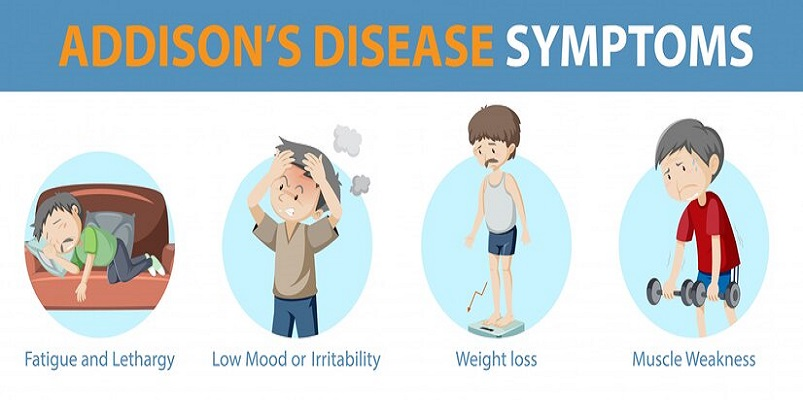
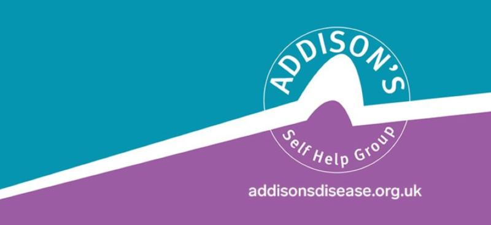

<!DOCTYPE html>
<html lang="en">
<head>
    <meta charset="UTF-8" />
    <meta name="viewport" content="width=device-width, initial-scale=1, shrink-to-fit=no" />
    <title>Addison's Disease</title>
    <link rel="stylesheet" href="./css/main.css">
    <link rel="stylesheet" href="https://cdnjs.cloudflare.com/ajax/libs/font-awesome/4.7.0/css/font-awesome.min.css">
    <link rel="stylesheet" href="https://use.fontawesome.com/releases/v6.0.0/css/all.css">
    <link rel="stylesheet" href="https://fonts.googleapis.com/css2?family=Roboto:wght@300;400;500;700&display=swap">
    <link rel="stylesheet" href="./css/mdb.min.css">
    <link rel="stylesheet" href="https://cdnjs.cloudflare.com/ajax/libs/font-awesome/4.7.0/css/font-awesome.min.css">
</head>
<body>
  <script src="https://cdn.jsdelivr.net/npm/bootstrap@5.3.3/dist/js/bootstrap.bundle.min.js" integrity="sha384-YvpcrYf0tY3lHB60NNkmXc5s9fDVZLESaAA55NDzOxhy9GkcIdslK1eN7N6jIeHz" crossorigin="anonymous"></script> 
  <script src="https://cdn.jsdelivr.net/npm/@popperjs/core@2.11.8/dist/umd/popper.min.js" integrity="sha384-I7E8VVD/ismYTF4hNIPjVp/Zjvgyol6VFvRkX/vR+Vc4jQkC+hVqc2pM8ODewa9r" crossorigin="anonymous"></script>
  <script src="https://cdn.jsdelivr.net/npm/bootstrap@5.3.3/dist/js/bootstrap.min.js" integrity="sha384-0pUGZvbkm6XF6gxjEnlmuGrJXVbNuzT9qBBavbLwCsOGabYfZo0T0to5eqruptLy" crossorigin="anonymous"></script>
</body>
</html>
        <!--Main Navigation-->
    <header>
      <style>
/* Carousel styling */
#introCarousel,
.carousel-inner,
.carousel-item,
.carousel-item.active {
  height: 100vh;
}

.carousel-item:nth-child(1) {
  background-image: url('./assets/images/Energy-preview-03_1024x1024.webp');
  background-repeat: no-repeat;
  background-size: cover;
  background-position: center center;
}
.carousel-item:nth-child(2) {
  background-image: url('./assets/images/pngtree-concepts-to-increase-the-power-of-positive-thinking-and-developing-their-image_15746559.jpg');
  background-repeat: no-repeat;
  background-size: cover;
  background-position: center center;
}
.carousel-item:nth-child(3) {
  background-image: url('./assets/images/download.jpeg');
  background-repeat: no-repeat;
  background-size: cover;
  background-position: center center;
}

@media (min-width: 992px) {
  #introCarousel {
    margin-top: -58.59px;
  }
  #introCarousel,
  .carousel-inner,
  .carousel-item,
  .carousel-item.active {
    height: 50vh;
  }
}

.navbar, .nav-link {
  color: #fff !important;
}

* {
  box-sizing: border-box;
}

/* body */
body {
  font-family: Arial;
  margin: 0;
}

/* Header */
.header {
  padding: 60px;
  text-align: center;
  background: #e5b1b1;
  color: white;
}

/* top nav bar */
.navbar {
  display: flex;
  background-color: #333;
  text-align: center;
  text-decoration: none;
}

/* nav bar links */
.navbar a {
  color: white;
  padding: 14px 20px;
  text-decoration: none;
  text-align: center;
}
 /* hover */
 .navbar a:hover, .dropdown:hover .dropbtn {
         background-color: #ddd;
         color: black;
         opacity: 0.7;
 }
     
       .dropdown {  
         float: left;
         overflow: hidden;
 }

       .dropdown .dropbtn {
         font-size: 16px; 
         border: none;
         outline: none;
         color: white;
         padding: 14px 16px;
         background-color: inherit;
         font-family: inherit;
         margin: 0;
       }

       .dropdown-content {
         display: none;
         position: absolute;
         background-color: #f9f9f9;
         min-width: 160px;
         box-shadow: 0px 8px 16px 0px rgba(0,0,0,0.2);
         z-index: 1;
       }
       .dropdown-content a {
         color: black;
         padding: 12px 16px;
         text-decoration: none;
         display: block;
         text-align: left;
       }

       .dropdown-content a:hover {
         background-color: #ddd;
       }
     
       li.dropdown {
         display: inline-block;
       }

       .dropdown:hover .dropdown-content {
      display: block;
       }


/* Column container */
.row {  
  display: flex;
  flex-wrap: wrap;
}

/*  side column  */
.side {
  flex: 30%;
  background-color: #f1f1f1;
  padding: 20px;
}

/* Main column */
.main {
  flex: 70%;
  background-color: white;
  padding: 20px;
}

/* Image */
.img {
  background-color: #aaa;
  width: 100%;
  padding: 20px;
}

/* box text */
.box {
  background-color: #e5b1b1;
  width: 100%;
  padding: 20px;
}

/* Footer for homepage */
.footer {
  padding: 20px;
  text-align: center;
  background: #ddd;
}

/* Footer for resources page */
.footerresource {
padding: 20px;
text-align: center;
background: #ddd;
}

/* Responsive layout */
@media screen and (max-width: 700px) {
  .row, .navbar {   
    flex-direction: column;
  }
}

.fa {
  text-align: center;
  text-decoration: none;
}

.fa:hover {
    opacity: 0.7;
}

        /* dropdown nav menu & submenu style */
        nav ul li{
          list-style-type: none;
          display: inline-block;
          background-color: #333;
          text-align: center;
          padding: 0.3rem 0 0 0.1rem;
          }
        nav ul li:last-child{
          margin-right: 0;
          background-color: #333;
          }
        nav ul li a{
          color: #333;
          display: inline-block;
          transition: all ease 0.3s;
          background-color: #333;
          list-style-type: none;
          color: white;
          padding: 0.3rem 0 0 0.1rem;
          text-decoration: none;
          text-align: center;
          }
        nav ul li a:hover{
          color: #333;
          background-color: #333;
          }
        nav ul .submenu{
          list-style-type: none;
          position: absolute;
          width: 200px; 
          box-shadow: 0 20px 45px #00000020;
          margin-top: center;
          margin-bottom: center;
          opacity: 0;
          transition: all ease 0.5s;
          background-color: #333;
          }
        nav ul li:hover .submenu{
          opacity: 1;
          margin-top: 0;
          background-color: #333;
          text-align: left;
          }
        nav ul .submenu li{
          margin: 0;
          width: 100%;
          background-color: #333;
          text-align: left;
          } 
        nav ul .submenu li a{
          display: inline-block;
          width: 100%;
          background-color: #333;
          text-align: left;
          }
        
</style>

<nav class="navbar navbar-expand-lg navbar-dark bg-dark" style="z-index: 2000;">
  <script href="https://cdn.jsdelivr.net/npm/bootstrap@5.3.3/dist/js/bootstrap.bundle.min.js" integrity="sha384-YvpcrYf0tY3lHB60NNkmXc5s9fDVZLESaAA55NDzOxhy9GkcIdslK1eN7N6jIeHz" crossorigin="anonymous"></script> 
  <script href="https://cdn.jsdelivr.net/npm/@popperjs/core@2.11.8/dist/umd/popper.min.js" integrity="sha384-I7E8VVD/ismYTF4hNIPjVp/Zjvgyol6VFvRkX/vR+Vc4jQkC+hVqc2pM8ODewa9r" crossorigin="anonymous"></script>
  <script href="https://cdn.jsdelivr.net/npm/bootstrap@5.3.3/dist/js/bootstrap.min.js" integrity="sha384-0pUGZvbkm6XF6gxjEnlmuGrJXVbNuzT9qBBavbLwCsOGabYfZo0T0to5eqruptLy" crossorigin="anonymous"></script>

  <div class="container-fluid">
    <a class="navbar-brand" href="./index.html"><strong>Home</strong></a>
    <ul>
      <li><a class="nav navbar" style="padding: 15px 0 0 5px;" href="#">Chronic Illnesses</a>
          <ul class="submenu">
              <li><a class="nav" href="./crohns.html">Crohn's Disease</a></li>
              <li><a class="nav" href="./addisons.html">Addison's Disease</a></li>
              <li><a class="nav" href="./triad.html">The Triad</a></li>
              <li><a class="nav" href="./osteo.html">Osteoporosis</a></li>
              <li><a class="nav" href="./stoma.html">Stoma</a></li>
          </ul>
      </li>
    </ul>
    <a class="nav" href="./resources.html">Resources</a>
    <a class="nav" href="https://www.pinterest.co.uk/Charmau24/crohns/"><i class="fa fa-pinterest" style="font-size:24px"></i></a>
    <a class="nav" href="https://www.linkedin.com/in/charlotte-maughan"><i class="fa fa-linkedin-square" style="font-size:24px"></i></a>           
    </div>
  </div>
</nav>

      <!-- Carousel wrapper -->
      <div id="introCarousel" class="carousel slide carousel-fade shadow-2-strong" data-mdb-carousel-init>
        <!-- Inner -->
        <div class="carousel-inner">
          <!-- Single item -->
          <div class="carousel-item active">
            <div class="mask" style="background-color: rgba(0, 0, 0, 0.6);">
              <div class="d-flex justify-content-center align-items-center h-100">
                <div class="text-white text-center" data-mdb-theme="dark">
                  <h1 class="mb-3">Addison's Disease</h1>
                </div>
              </div>
            </div>
          </div>
        </div>
      </div>
      <!-- Carousel wrapper -->
    </header>
    <!--Main Navigation-->

    <!--Main layout-->
    <main class="mt-5">
      <div class="container">
        <!--Section: Content-->
        <section>
          <div class="row">
            <div class="col-md-6 gx-5 mb-4">
              <h4><strong>What is Addison's Diease?</strong></h4>              

              <p class="text-muted">
                Addison’s disease is a chronic condition in which your adrenal glands 
                don’t produce enough of the hormones cortisol and aldosterone.</p>

                <p class="text-muted">Your adrenal glands are small, 
                  triangle-shaped glands that are sit on top of each of your two 
                  kidneys.</p>

                  <p class="text-muted">Cortisol is a hormone that helps your body respond to stress, including 
                  the illness, injury or surgery. It also helps regulate blood 
                  pressure, heart function, immune system and blood glucose levels.</p> 
                  
                  <p><strong>KEY TO NOTE:</strong> Cortisol is essential for life.</p>

                  <p class="text-muted">Aldosterone is a hormone affecting salt balance
                    in your blood. This in turn controls the amount of fluid your kidneys remove as urine, impacting blood volume and blood pressure.</p>
              </p>

              <h4><strong>Signs and Symptoms</strong></h4>
              <h6>What warning signs should you be aware of?</h6>
              <p class="text-muted">
                With Addison’s disease, the damage to your adrenal glands usually happens slowly 
                over time, so symptoms occur gradually and vary from person to person.
                <li class="text-muted">Extreme fatigue</li>
                <li class="text-muted">Patches of dark skin - particularly around scars and gums</li>
                <li class="text-muted">Abdominal pain</li>
                <li class="text-muted">Nausea and vomiting</li>
                <li class="text-muted">Loss of appetite and weight loss</li>
                <li class="text-muted">Craving for salty foods</li>
                <li class="text-muted">...and many more</li>
              </p>

              <h4><strong>Diagnosis</strong></h4>
              <p class="text-muted">
                To diagnose Addison’s disease, your doctor may send you for:</p>
                <li><strong>Blood tests</strong></li>
                <p class="text-muted">This will measure the levels of sodium, potassium, cortisol and ACTH in your blood.</p>
                
                <li><strong>ACTH stimulation test</strong></li>
                <p class="text-muted">This test measures your adrenal glands’ response after you’re given a dose of artificial ACTH. 
                If your adrenal glands do not produce sufficient levels of cortisol in response, they may not be functioning properly.</p>
              
                <li><strong>CT scan</strong></li>
                <p class="text-muted">CT scans are imaging test that uses computers to combine many X-ray images 
                into cross-sectional views. This test will evaluate your adrenal glands and/or pituitary gland. 
                For example, it can show if your immune system has damaged your adrenal glands or if the glands are infected.</p>
              </p>

              <h4><strong>Treatment Options</strong></h4>
              <p class="text-muted">
                
                Addison’s disease is treated by replacin the critical hormones, cortisol and aldosterone, with synthetic versions of them.
                </p>
                <p class="text-muted">Cortisol is replaced by the drug hydrocortisone, and aldosterone is replaced by the drug fludrocortisone. </p>
                <p class="text-muted">Addison’s disease is a life-long, chronic condition, so you’ll need to take medication for the rest of your life.</p>
                <p class="text-muted">Dosages vary from person-to-person, and it is recommended to increase the dosage when you’re experiencing an 
                  infection, trauma, surgery and other stressful situations to prevent an acute adrenal crisis.</p>
                <p class="text-muted">If you’re taking fludrocortisone, you should consider increasing your salt intake, especially in hot and humid
                  weather and after vigorous exercise.</p>
              </p> 
              </div>

            <div class="col-md-6 gx-5 mb-4">
              <div class="bg-image hover-overlay shadow-2-strong" data-mdb-ripple-init data-mdb-ripple-color="light">
                
                <a href="https://my.clevelandclinic.org/health/diseases/15095-addisons-disease#symptoms-and-causes">
                  <div class="mask" style="background-color: rgba(251, 251, 251, 0.15);"></div>
                </a>
              </div>
              <h6>Visual representation of symptoms</h6>
              <br> 
              
              <div class="bg-image hover-overlay shadow-2-strong" data-mdb-ripple-init data-mdb-ripple-color="light">
                
                <a href="https://www.addisonsdisease.org.uk/">
                  <div class="mask" style="background-color: rgba(251, 251, 251, 0.15);"></div>
                </a>
              </div>
              <h6>Addison's UK charity resources</h6>
              <br></br>
              
              <div class="card text-bg-secondary mb-3" style="max-width: 100%;">
                <div class="card-header"><h2>Addison's</h2></div>
                <div class="card-body">
                  <h5 class="card-title">FACT</h5>
                  <p class="card-text">Addison's disease is rare. In developed countries, it affects about 100 to 140 of every million people</p>
                </div>
              </div>
            </div>

            </div>
          </div>
        </section>
        <!--Section: Content-->

        <!--Section: Content-->
        <section class="mb-5">
                <!-- Submit button -->
                <a button type="submit" class="btn btn-primary btn-block mb-4" data-mdb-ripple-init href="./newsletter.html">
                  Sign up to the newsletter
                </a></a>
              </form>
            </div>
          </div>
        </section>
        <!--Section: Content-->
      </div>
    </main>
    <!--Main layout-->


    <!--Footer-->
    <footer class="bg-light text-lg-start">
      <hr class="m-0" />

      <div class="text-center py-4 align-items-center">
        <a href="#top" title="Scroll to top" id="scroll-top-link" aria-hidden="true" data-av_icon="" data-av_iconfont="entypo-fontello" class=""><span class="avia_hidden_link_text">Scroll to top</span></a>  
        </a>
      </div>

      <div class="text-center p-3" style="background-color: rgba(0, 0, 0, 0.2);">
        © 2024 Copyright:
        <a class="text-dark">Charlotte - Powered by </a><a href="https://codefirstgirls.com/">Code First Girls</a><a> training.</a>
      </div>
    </footer>
    <!--Footer-->
    <script type="text/javascript" src="js/mdb.umd.min.js"></script>
</body>
</html>